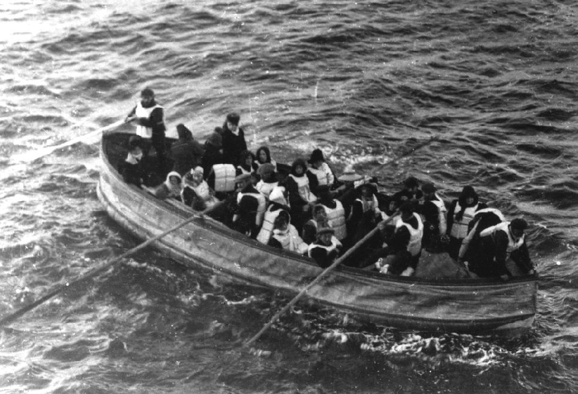

How did passenger class affect survival on the Titanic?
by Dan Spector
The shipwreck of the RMS Titanic is a disaster that has remained in the public consciousness for over 100 years. But not everyone is aware of the correlation between passenger class and survival.

Explore a chart of the survivors by class
The third class passengers were located at the bottom of the ship, so it was difficult for them to navigate the stairs and passageways to reach the boat deck. In addition, third class quarters had few stewards who could direct the passengers where to go.
These are actual Titanic survivors in a lifeboat. The photo was taken by a passenger on the Carpathia, the first ship that received the Titatnic's distress signal. As the picture suggests, the lifeboats were very small. Even if all the third class passengers were able to reach the boats, only half of them would have been able to fit.